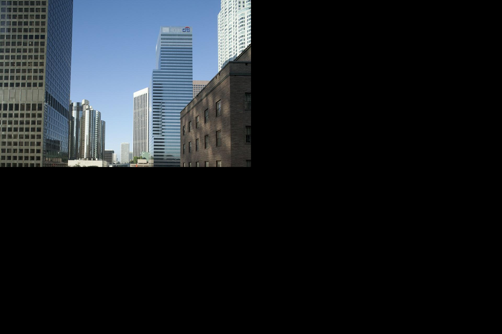
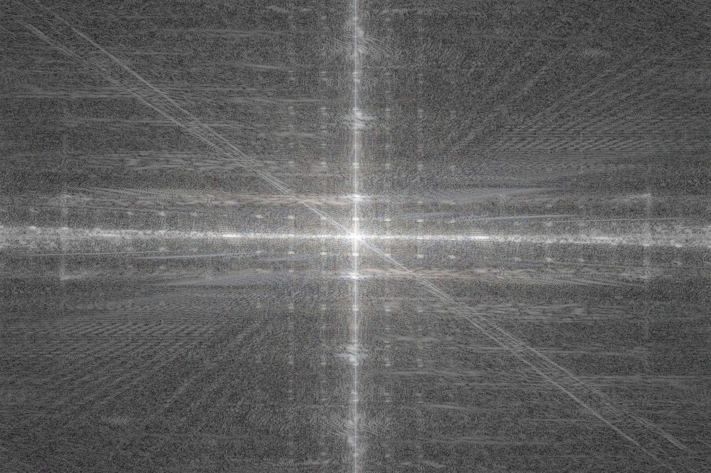
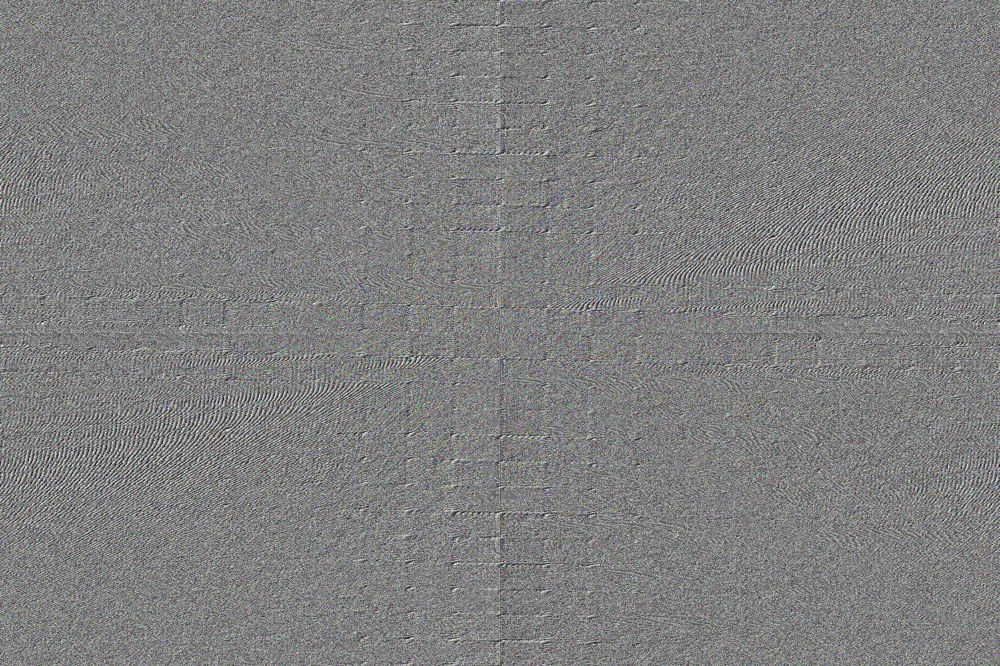
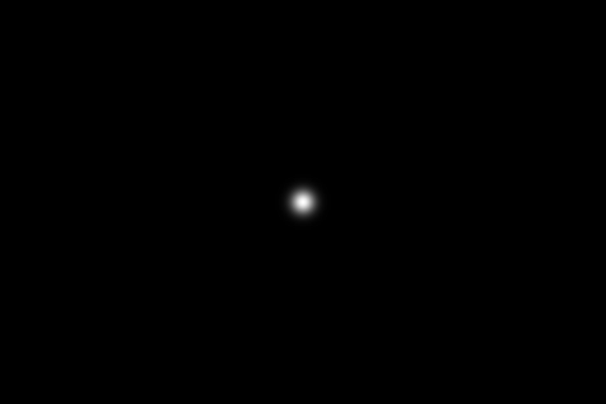
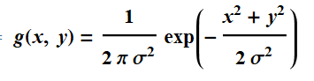
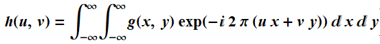
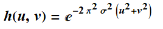
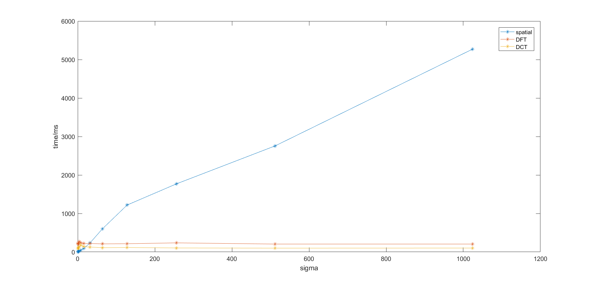
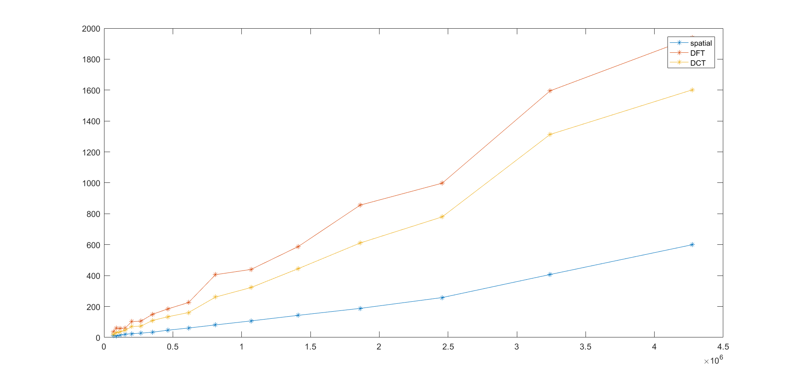

DFT和DCT以及空间域的高斯滤波对比
最近需要用到一个sigma很大的高斯滤波操作，如果在空间域里面用很大的kernel，其效率实在太低。对于这种情况，频率域更加适合。
离散傅里叶变换（DFT）
傅里叶变换本身的复杂度是O(n^2)，但是因为有了快速傅里叶变换，其复杂度可以达到O(nlogn)。
给定一张输入图像I(x,y)，假设其数值范围为[0,1]，图像分辨率为W,H
首先对其进行扩充大小为M=2W,N=2H，并填充0，此举保证边缘处理的均匀性。

为了随后进行滤波以及可视化的方便，这里计算一下Ic(x,y)=Ip(x,y)*(-1)^(x+y)。这样同时把频域里面一个完整的周期刚好放到一张图像上，频域的中心即为图像的中心。
然后对Ic(x,y)进行离散傅里叶变换，得到F(u,v)，傅里叶变换后一般用复数表示，因此F(u,v)是大小为MxN的矩阵，并且每个元素是一个复数。我们可以计算F(u,v)的谱(也就是复数的模)和相位角(复数虚部与实部比值的反正切)来可视化，不过谱的范围很大，所以这里取了一下对数，然后调节了一下范围：

同样地，相位角这里也转换到[0,1]

当然这两张现在主要用于可视化，我们需要构造一个高斯低通滤波器对F(u,v)进行低频信息的获取，所以先准备一张MxN大小的高斯低通滤波器图像h(u,v)，sigma取10。

这里需要注意一点的是频率域高斯滤波函数与空间域滤波的关系。空间域中，我们一般把高斯核定义为：

要获得频率域的滤波器，则应该对函数g进行傅里叶变换：

从而得到

然而，我们对图像实际进行的是离散傅里叶变换，因此实际上h(x,y)的虚部还要除以MxN。然后利用h(u,v)进行滤波G(u,v)=h(u,v)*F(u,v)，然后对滤波后的结果G(u,v)进行反向离散傅里叶变换，并取其实部，得到空间域的图像Is(x,y)
最后，对之前空间域所作的两个操作进行还原，即可得到最终图像：
注意到图像周围是有黑边的，然而这种瑕疵在DFT里面时很难去除的，包括今年都还有论文在尝试解决这个问题。所以如果想要取得比较好的效果，有更好的选择：离散余弦变换
离散余弦变换（DCT）
离散余弦变换类似于离散傅里叶变换，在图像处理中，实际上DCT用得更加广泛，其好处就是只在实域范围内变换，并且没有DFT的边界瑕疵。关于DCT的详细介绍就不赘述了，请参考wiki。利用其进行高斯滤波的时候，步骤跟DFT类似：
- 将图像I(x,y)利用DCT变换到F(u,v)
- 构造滤波器h(u,v)，滤波器与傅里叶变换后高斯滤波器类似，只是要除以4*W*H
- 进行滤波G(u,v)=h(u,v)*F(u,v)
- 反变换回空间域
利用DCT采用同样的sigma进行高斯滤波后的结果如下：
可以看出，这个结果没有边界瑕疵，并且模糊的程度也是相似的。
模糊质量对比
首先准备一张普通高斯滤波后的groundtruth，然后利用DFT和DCT与其进行比较，计算PSNR
| groundtruth | DFT | DCT |
|---|---|---|
| PSNR=∞ | PSNR=29.7861 | PSNR=38.9494 |
DCT的PSNR是远大于DFT的，并且数值也非常大，和groundtruth非常接近。
速度对比
以下用opencv自带的空间高斯滤波函数GaussianBlur，以及上面实现的DFT、DCT进行对比，其中CPU型号为intel i5 4300u。
分别用spatial、DFT、DCT的方法对一张大小为960x640的图片进行模糊，其耗费的时间随着sigma的增大如图所示

可以看出，随着sigma的增大，空间域滤波方法大致呈线性增长O(Sigma)，而DFT和DCT接近于常数O(1)。至于空间域为什么不是随sigma^2增长，我估计可能是因为opencv实现空间滤波的时候采用的两次滤波方法，首先用一维的高斯滤波器进行横向滤波，然后同样地进行一次纵向滤波，这样时间耗费就是2*sigma了。
现在保持sigma=10不变，改变图像大小，这里用图片宽度乘以高度来表示大小：

对于图像分辨率的增大，实际上DFT和DCT不具有优势，对于空间滤波来说，sigma决定了kernel的大小，这样就使得其时间复杂度为O(N)，而DFT和DCT都为O(NlogN)。
所以如果是小尺寸图片，并且sigma很大（一般来说大于20~30），则应该选择DCT方法，对于大尺寸图片，并且sigma很小，则应该选择空间滤波器方法，当然以上都是不严谨的测试。实际上高斯滤波的其他近似方法有许多，比如3次box filter近似、SII、AM、Deriche、VYV。一般来说，如果要求比较好的质量，则DCT比较合适，而如果对速度要求非常高，则可以尝试SII。